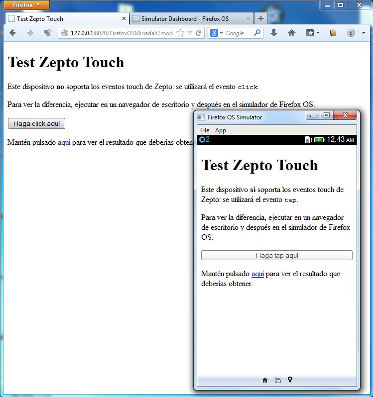

Este dispositivo soporta los eventos touch de Zepto:
se utilizará el evento .
Para ver la diferencia, ejecutar en un navegador de escritorio y después en el simulador de Firefox OS.
Mantén pulsado aquí para ver el resultado que deberías obtener. 